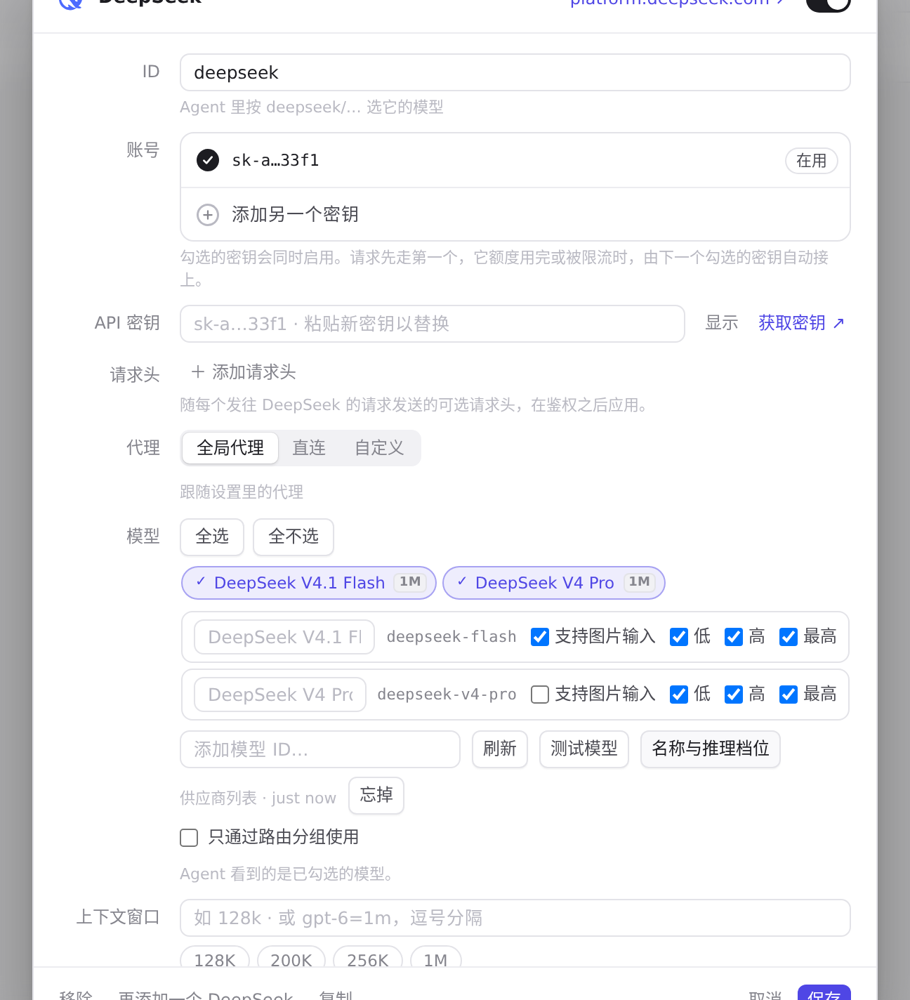
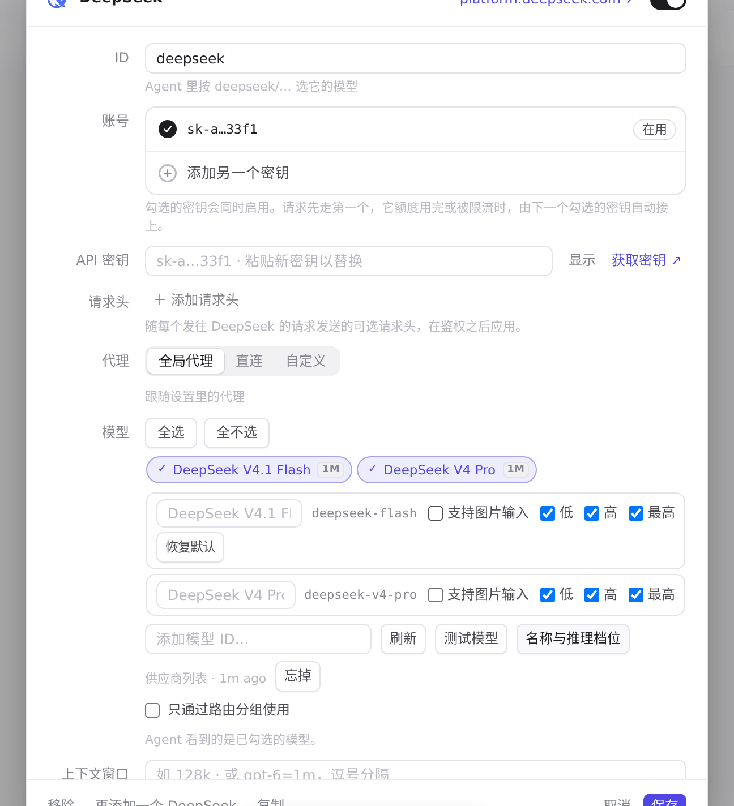

#357 界面预览
commit f2a0e06 · 回到 PR · 供应商编辑器里改一个模型的推理等级会保存并整块重绘编辑器：这次改动让「名称与等级」的模型列表记住自己所属的供应商和滚动位置，重绘同一供应商时恢复原处、换供应商或重新打开时从头开始，列表不再跳回第一个模型。
红线是鼠标走过的轨迹，红色圆环是一次点击；底部文字是这一步在做什么。空格暂停，← → 逐段查看。

供应商编辑器里的模型等级列表 · 「名称与推理档位」里的模型列表与各自的推理档位复选框

供应商编辑器里的模型等级列表 · 点击一个推理档位复选框之后的模型列表